Generado con python -m espanol.visualizacion_arboles a partir de
logs/parser_propio.json; nodos que solo derivan ε omitidos.
1 · 2 · 3 · 4 · 5 · 6 · 7 · 8 · 9 · 10 · 11 · 12 · 13 · 14 · 15 · 16 · 17 · 18 · 19 · 20 · 21 · 22 · 23 · 24 · 25 · 26 · 27 · 28
concordancia_genero_numero_basica
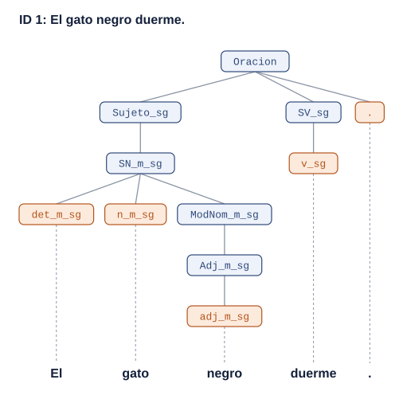
(Oracion (Sujeto_sg (SN_m_sg (det_m_sg El) (n_m_sg gato) (ModNom_m_sg (Adj_m_sg (adj_m_sg negro))))) (SV_sg (v_sg duerme)) (. .))
concordancia_genero_numero_basica
(Oracion (Sujeto_sg (SN_f_sg (det_f_sg La) (n_f_sg gata) (ModNom_f_sg (Adj_f_sg (adj_f_sg negra))))) (SV_sg (v_sg corre)) (. .))
concordancia_plural_masculino
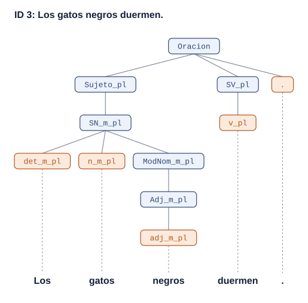
(Oracion (Sujeto_pl (SN_m_pl (det_m_pl Los) (n_m_pl gatos) (ModNom_m_pl (Adj_m_pl (adj_m_pl negros))))) (SV_pl (v_pl duermen)) (. .))
concordancia_plural_femenino
(Oracion (Sujeto_pl (SN_f_pl (det_f_pl Las) (n_f_pl gatas) (ModNom_f_pl (Adj_f_pl (adj_f_pl negras))))) (SV_pl (v_pl corren)) (. .))
SN_sin_adjetivo
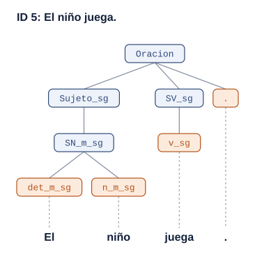
(Oracion (Sujeto_sg (SN_m_sg (det_m_sg El) (n_m_sg niño))) (SV_sg (v_sg juega)) (. .))
SN_sin_adjetivo
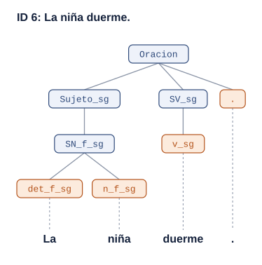
(Oracion (Sujeto_sg (SN_f_sg (det_f_sg La) (n_f_sg niña))) (SV_sg (v_sg duerme)) (. .))
determinante_indefinido_sg
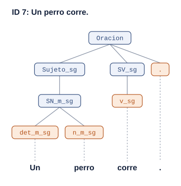
(Oracion (Sujeto_sg (SN_m_sg (det_m_sg Un) (n_m_sg perro))) (SV_sg (v_sg corre)) (. .))
determinante_indefinido_sg
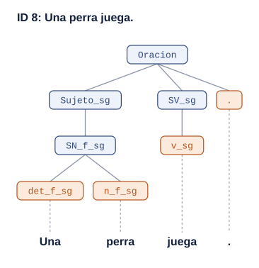
(Oracion (Sujeto_sg (SN_f_sg (det_f_sg Una) (n_f_sg perra))) (SV_sg (v_sg juega)) (. .))
plural_sin_adjetivo
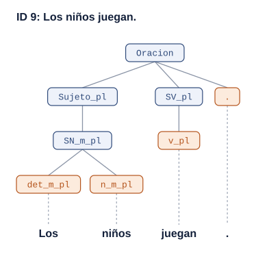
(Oracion (Sujeto_pl (SN_m_pl (det_m_pl Los) (n_m_pl niños))) (SV_pl (v_pl juegan)) (. .))
plural_sin_adjetivo
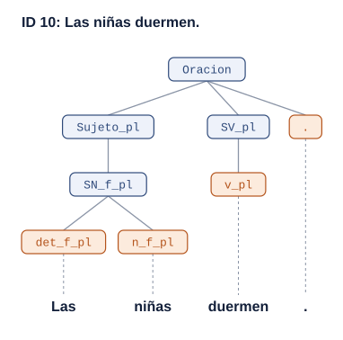
(Oracion (Sujeto_pl (SN_f_pl (det_f_pl Las) (n_f_pl niñas))) (SV_pl (v_pl duermen)) (. .))
adjetivo_invariable_sg
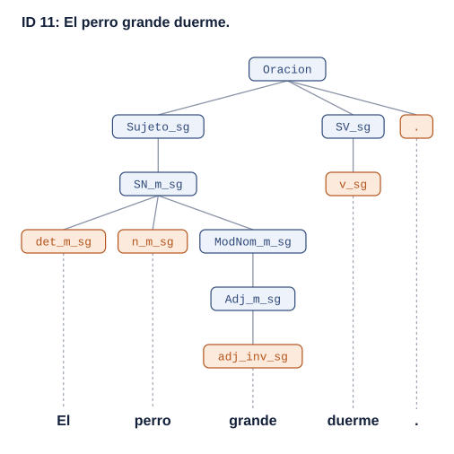
(Oracion (Sujeto_sg (SN_m_sg (det_m_sg El) (n_m_sg perro) (ModNom_m_sg (Adj_m_sg (adj_inv_sg grande))))) (SV_sg (v_sg duerme)) (. .))
adjetivo_invariable_sg
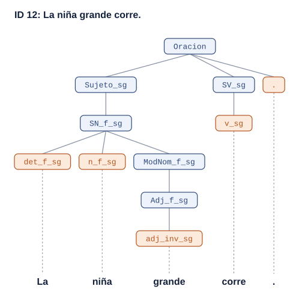
(Oracion (Sujeto_sg (SN_f_sg (det_f_sg La) (n_f_sg niña) (ModNom_f_sg (Adj_f_sg (adj_inv_sg grande))))) (SV_sg (v_sg corre)) (. .))
intensificador_adv_modo_SP
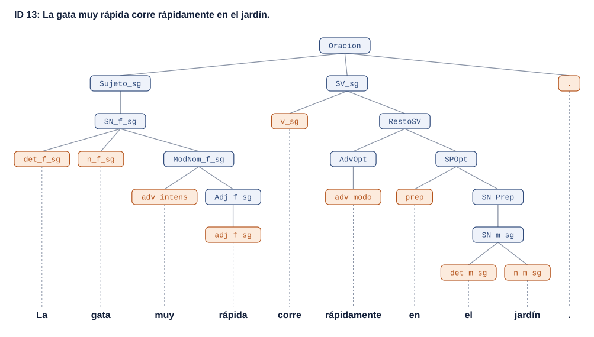
(Oracion (Sujeto_sg (SN_f_sg (det_f_sg La) (n_f_sg gata) (ModNom_f_sg (adv_intens muy) (Adj_f_sg (adj_f_sg rápida))))) (SV_sg (v_sg corre) (RestoSV (AdvOpt (adv_modo rápidamente)) (SPOpt (prep en) (SN_Prep (SN_m_sg (det_m_sg el) (n_m_sg jardín)))))) (. .))
adv_modo_SP_bajo
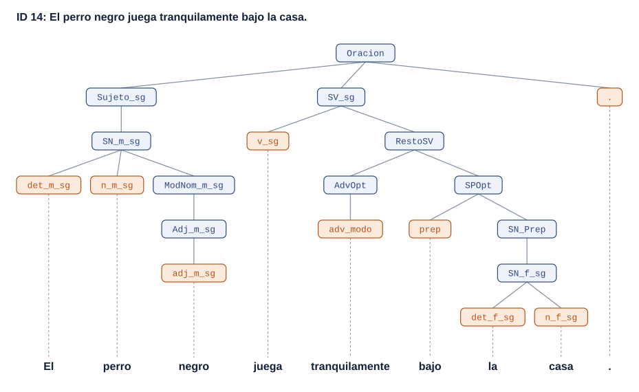
(Oracion (Sujeto_sg (SN_m_sg (det_m_sg El) (n_m_sg perro) (ModNom_m_sg (Adj_m_sg (adj_m_sg negro))))) (SV_sg (v_sg juega) (RestoSV (AdvOpt (adv_modo tranquilamente)) (SPOpt (prep bajo) (SN_Prep (SN_f_sg (det_f_sg la) (n_f_sg casa)))))) (. .))
adverbio_de_modo
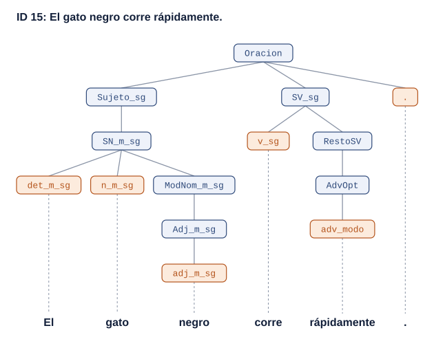
(Oracion (Sujeto_sg (SN_m_sg (det_m_sg El) (n_m_sg gato) (ModNom_m_sg (Adj_m_sg (adj_m_sg negro))))) (SV_sg (v_sg corre) (RestoSV (AdvOpt (adv_modo rápidamente)))) (. .))
frase_preposicional
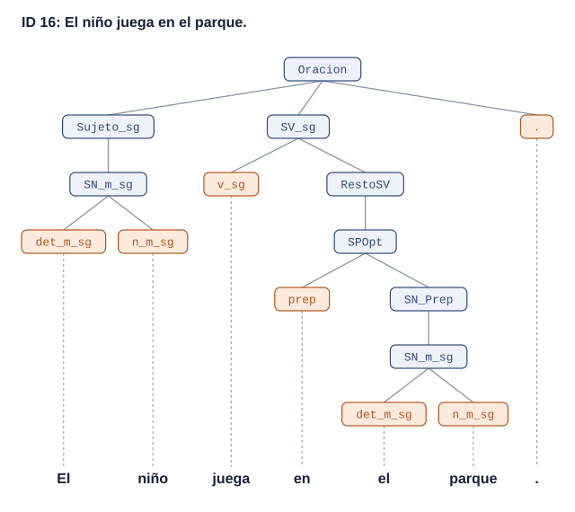
(Oracion (Sujeto_sg (SN_m_sg (det_m_sg El) (n_m_sg niño))) (SV_sg (v_sg juega) (RestoSV (SPOpt (prep en) (SN_Prep (SN_m_sg (det_m_sg el) (n_m_sg parque)))))) (. .))
plural_con_adv_modo
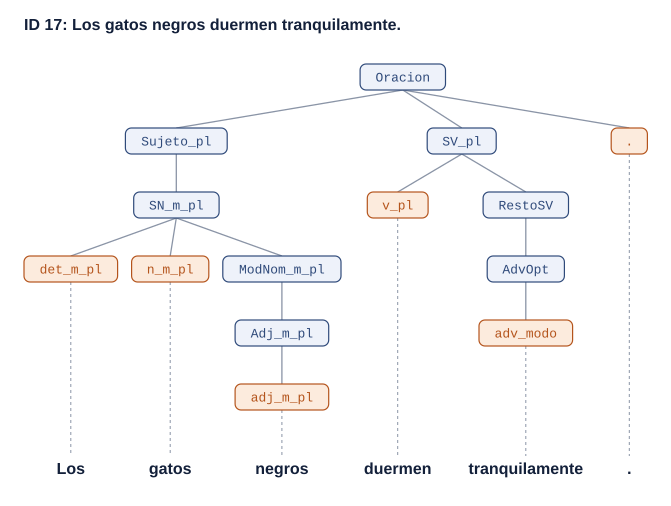
(Oracion (Sujeto_pl (SN_m_pl (det_m_pl Los) (n_m_pl gatos) (ModNom_m_pl (Adj_m_pl (adj_m_pl negros))))) (SV_pl (v_pl duermen) (RestoSV (AdvOpt (adv_modo tranquilamente)))) (. .))
adv_modo_y_SP
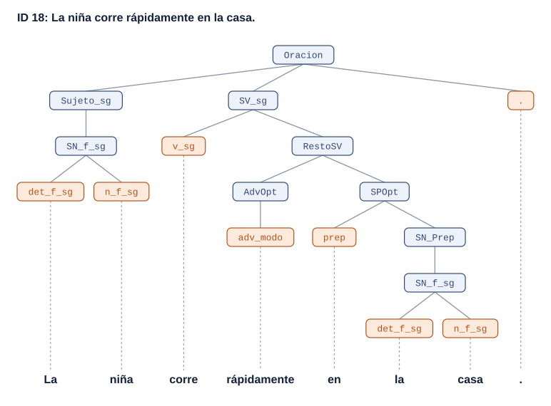
(Oracion (Sujeto_sg (SN_f_sg (det_f_sg La) (n_f_sg niña))) (SV_sg (v_sg corre) (RestoSV (AdvOpt (adv_modo rápidamente)) (SPOpt (prep en) (SN_Prep (SN_f_sg (det_f_sg la) (n_f_sg casa)))))) (. .))
relativa_de_sujeto
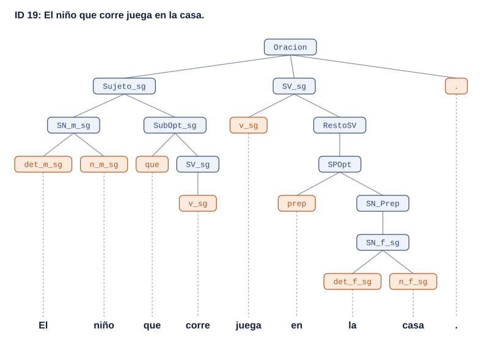
(Oracion (Sujeto_sg (SN_m_sg (det_m_sg El) (n_m_sg niño)) (SubOpt_sg (que que) (SV_sg (v_sg corre)))) (SV_sg (v_sg juega) (RestoSV (SPOpt (prep en) (SN_Prep (SN_f_sg (det_f_sg la) (n_f_sg casa)))))) (. .))
completiva_basica
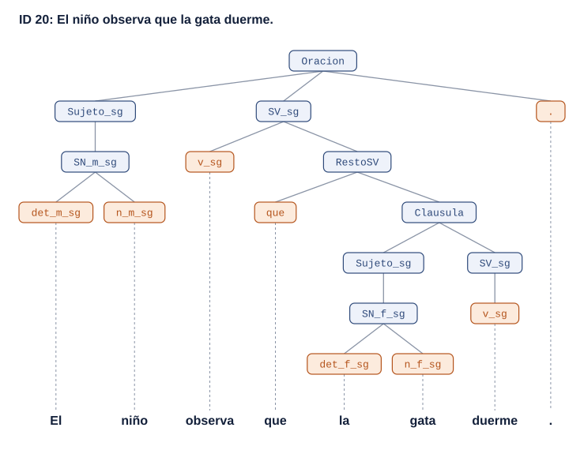
(Oracion (Sujeto_sg (SN_m_sg (det_m_sg El) (n_m_sg niño))) (SV_sg (v_sg observa) (RestoSV (que que) (Clausula (Sujeto_sg (SN_f_sg (det_f_sg la) (n_f_sg gata))) (SV_sg (v_sg duerme))))) (. .))
intensificador_y_adv_modo
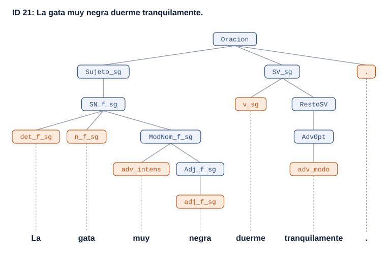
(Oracion (Sujeto_sg (SN_f_sg (det_f_sg La) (n_f_sg gata) (ModNom_f_sg (adv_intens muy) (Adj_f_sg (adj_f_sg negra))))) (SV_sg (v_sg duerme) (RestoSV (AdvOpt (adv_modo tranquilamente)))) (. .))
adj_invariable_pl_y_SP
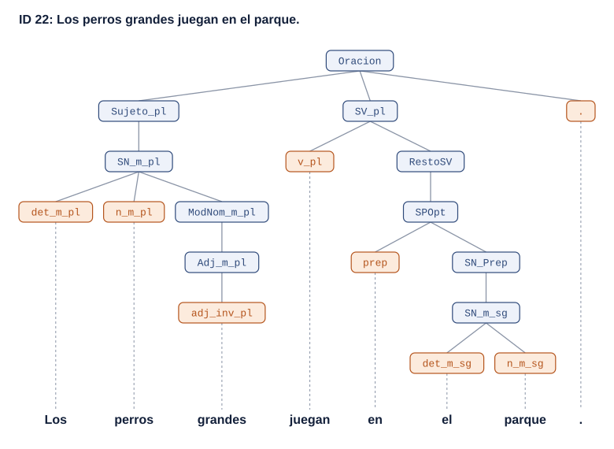
(Oracion (Sujeto_pl (SN_m_pl (det_m_pl Los) (n_m_pl perros) (ModNom_m_pl (Adj_m_pl (adj_inv_pl grandes))))) (SV_pl (v_pl juegan) (RestoSV (SPOpt (prep en) (SN_Prep (SN_m_sg (det_m_sg el) (n_m_sg parque)))))) (. .))
plural_femenino_con_adv
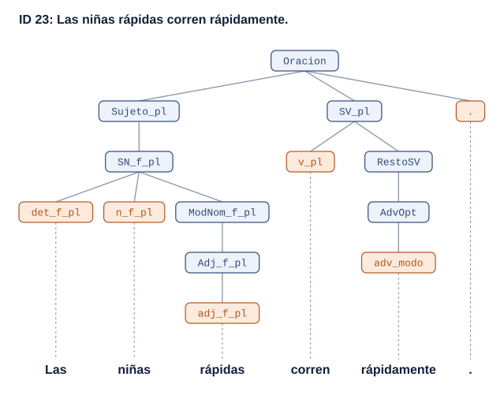
(Oracion (Sujeto_pl (SN_f_pl (det_f_pl Las) (n_f_pl niñas) (ModNom_f_pl (Adj_f_pl (adj_f_pl rápidas))))) (SV_pl (v_pl corren) (RestoSV (AdvOpt (adv_modo rápidamente)))) (. .))
completiva_sujeto_masculino
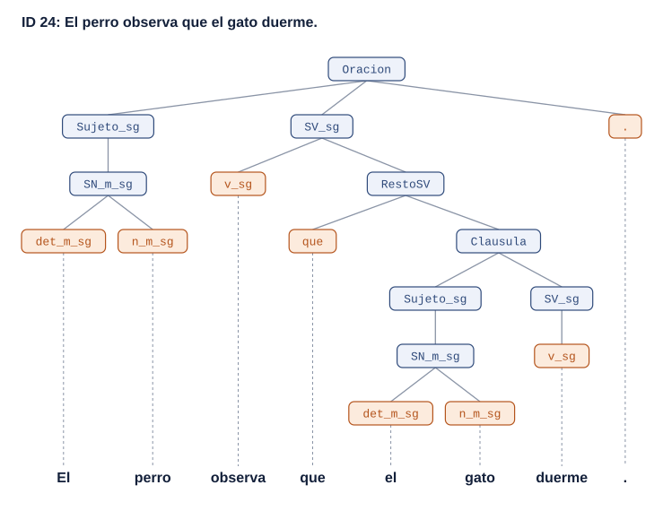
(Oracion (Sujeto_sg (SN_m_sg (det_m_sg El) (n_m_sg perro))) (SV_sg (v_sg observa) (RestoSV (que que) (Clausula (Sujeto_sg (SN_m_sg (det_m_sg el) (n_m_sg gato))) (SV_sg (v_sg duerme))))) (. .))
SP_con_y_adj_invariable
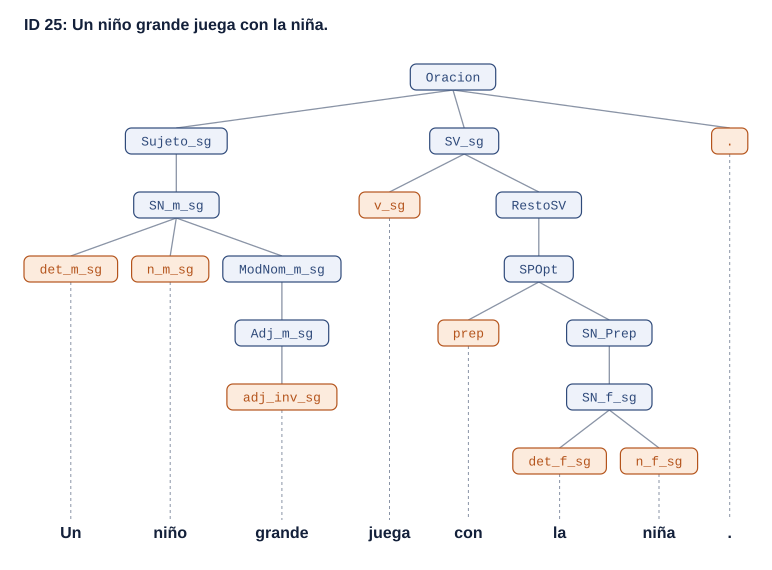
(Oracion (Sujeto_sg (SN_m_sg (det_m_sg Un) (n_m_sg niño) (ModNom_m_sg (Adj_m_sg (adj_inv_sg grande))))) (SV_sg (v_sg juega) (RestoSV (SPOpt (prep con) (SN_Prep (SN_f_sg (det_f_sg la) (n_f_sg niña)))))) (. .))
plural_femenino_con_SP
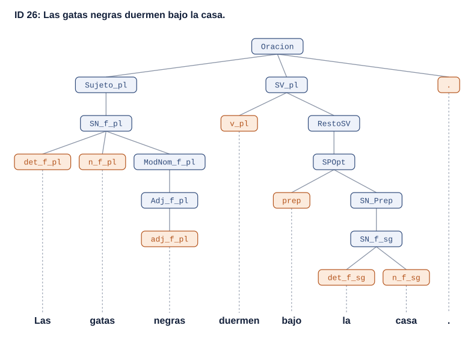
(Oracion (Sujeto_pl (SN_f_pl (det_f_pl Las) (n_f_pl gatas) (ModNom_f_pl (Adj_f_pl (adj_f_pl negras))))) (SV_pl (v_pl duermen) (RestoSV (SPOpt (prep bajo) (SN_Prep (SN_f_sg (det_f_sg la) (n_f_sg casa)))))) (. .))
relativa_y_SP
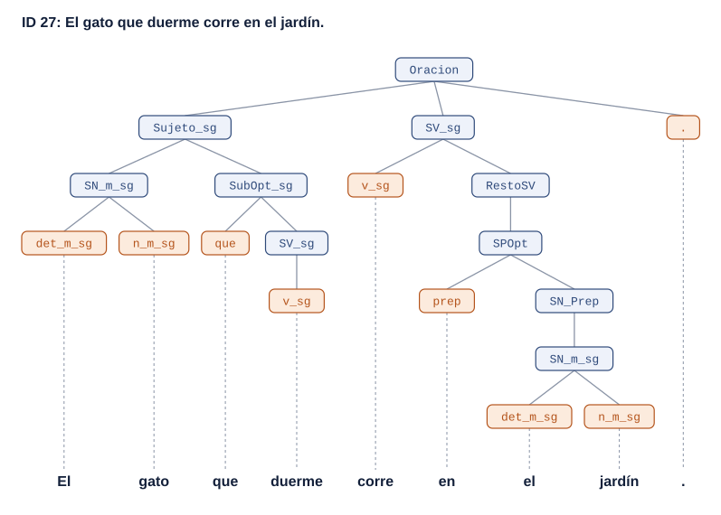
(Oracion (Sujeto_sg (SN_m_sg (det_m_sg El) (n_m_sg gato)) (SubOpt_sg (que que) (SV_sg (v_sg duerme)))) (SV_sg (v_sg corre) (RestoSV (SPOpt (prep en) (SN_Prep (SN_m_sg (det_m_sg el) (n_m_sg jardín)))))) (. .))
relativa_y_completiva
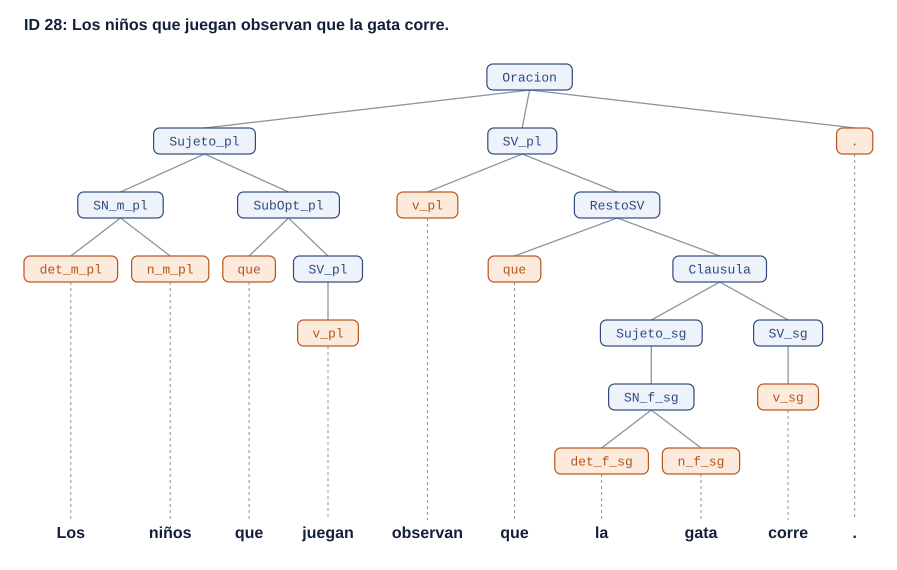
(Oracion (Sujeto_pl (SN_m_pl (det_m_pl Los) (n_m_pl niños)) (SubOpt_pl (que que) (SV_pl (v_pl juegan)))) (SV_pl (v_pl observan) (RestoSV (que que) (Clausula (Sujeto_sg (SN_f_sg (det_f_sg la) (n_f_sg gata))) (SV_sg (v_sg corre))))) (. .))